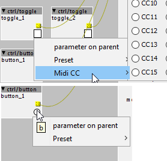
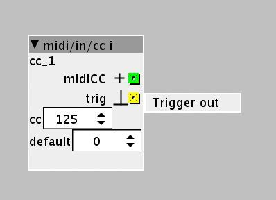

I know I could use a dedicated CC in but I find this strange tho

That has been up before.
There are ways to work around it.
You could just use one of the midi/in/cc objects. They have a trigger output. Every time there is a change from the midi cc input, it will send out a trigger.

Or you could use a toggle object and and a logic object, to create a trigger on both on and off.
You can also create your own button out of a toggle. You can edit a toggles state, with code, but it does take a little bit of coding effort. You can code it to automatically go to off state after a few milliseconds, which is essentially a trigger button.
My Axo is in storage right now, so can't test it, but it should be fairly easy to make something that works.